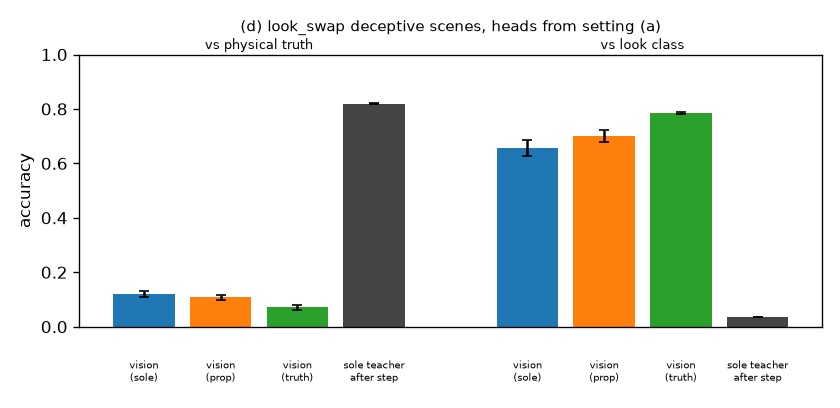

Does the sole teach a camera better?
A frozen ViT looks at the floor before each step, and a small head on top learns to name the floor class. The head is trained three times, changing only who supplies the labels: the sole teacher, the joints and IMU teacher, or the simulator's truth. Six floor classes, three gaits.
In short
- On gaits the teachers saw, the two teachers tie. Vision taught by the sole scores 0.816, taught by joints and IMU 0.824. Taught by truth it scores 0.857; the re-check calls that gap inconclusive, not zero.
- On a gait the teachers never saw, only the sole teaches. Labels from SONIC steps: sole 0.488, joints and IMU 0.097. Truth would give 0.867, so the sole's labels still lose most of the way.
- This repeats the teachers' own gap. The re-check notes that the vision result restates the gap in the labels themselves (0.40 against 0.09 macro-F1), on one held-out gait.
- Vision reads the look, not the physics. On deceptive floors vision before the step matches the real floor on 0.07-0.12 of steps and the look on 0.66-0.78. The sole after the step matches the real floor on 0.820.
- The uncertainty is larger than the seed spread. With three test textures per class, resampling textures gives the sole-taught head a 95 % interval of 0.71 to 0.89.
What was done
- Image. For every footstep, the best frame from the torso camera before contact (the frame where the future footprint is largest and fully visible), cropped to about three foot lengths around the place where the foot will land, at 224 px. The crop is square and about half of it is grey padding below the image.
- Model. A frozen DINOv3 ViT-B/16. Its features are the class token plus the mean of the patch tokens weighted by the footprint. A small head is trained on top.
- Labels. The same head, trained with labels from the sole teacher (coarse sole features: four pressure blocks, four shear vectors, centre of pressure, total force, contact area), from the joints and IMU teacher, or from simulator truth as the ceiling. Teachers are cross-fitted: none labels an episode it trained on. See the two teachers.
- Two settings. (a) Labels come from steps of G113 and G80, two ordinary flat-foot walking policies the teachers were trained on. (b) Labels come from steps of SONIC, human-like heel-to-toe walking, which the teachers never saw.
- Test. 6,269 test steps of all three gaits, 5,282 of them with a floor class, on textures held out of training. Macro-F1 against simulator truth, mean ± sd over 3 seeds. A difference counts as real when it is larger than twice the seed spread.
Who teaches better
| Labels | Setting | All gaits | G113 | G80 | SONIC | Labels right on training steps |
|---|---|---|---|---|---|---|
| Sole teacher | (a) seen gaits | 0.816 ± 0.028 | 0.798 | 0.833 | 0.809 | 0.82 |
| Joints + IMU teacher | (a) seen gaits | 0.824 ± 0.030 | 0.826 | 0.820 | 0.819 | 0.82 |
| Simulator truth | (a) seen gaits | 0.857 ± 0.009 | 0.839 | 0.894 | 0.820 | 1.00 |
| Sole teacher, shifted readout | (a) seen gaits | 0.827 ± 0.014 | 0.825 | 0.830 | 0.815 | 0.81 |
| Sole teacher | (b) SONIC | 0.488 ± 0.026 | 0.483 | 0.498 | 0.480 | 0.43 |
| Joints + IMU teacher | (b) SONIC | 0.097 ± 0.048 | 0.104 | 0.092 | 0.091 | 0.13 |
| Simulator truth | (b) SONIC | 0.867 ± 0.023 | 0.852 | 0.897 | 0.835 | 1.00 |
| Sole teacher, shifted readout | (b) SONIC | 0.498 ± 0.044 | 0.509 | 0.487 | 0.496 | 0.42 |
| Shuffled labels (control) | 0.197 ± 0.032 | 0.206 | 0.194 | 0.183 | – |

Reading the table. In (a) the two teachers give the same vision score, and in (b) the sole wins by 39 points. The last column explains both: in (a) the two label sets are equally right, agreeing with truth on 0.82 of training steps, in (b) the sole's labels are right far more often than the joints and IMU labels. Vision learns about as well as its labels allow; the sole-taught head in (b) slightly exceeds its own labels (0.40 macro-F1 against truth). The shifted readout of the sole changes nothing, so both conclusions survive that sensor change. The joints and IMU head in (b) is at or below the shuffled control.
No pad-sole data exists for the vision dataset, so the sensor-change test rests on the shifted readout only. For context, the sole teacher itself falls on the pad sole from 0.806 to 0.586 on seen gaits and from 0.437 to 0.325 on SONIC.
Fewer labels
The same comparison when only a few labelled steps per texture are used for training.
| Labels, setting | 5 per texture | 20 | 100 | All |
|---|---|---|---|---|
| Sole, (a) | 0.743 | 0.797 | 0.804 | 0.816 |
| Joints + IMU, (a) | 0.770 | 0.776 | 0.788 | 0.824 |
| Truth, (a) | 0.808 | 0.842 | 0.855 | 0.857 |
| Sole, (b) | 0.459 | 0.488 | 0.502 | 0.488 |
| Joints + IMU, (b) | 0.087 | 0.067 | 0.098 | 0.097 |
| Truth, (b) | 0.838 | 0.863 | 0.876 | 0.867 |
Reading the table. Means over 3 seeds. In (a), sole and joints and IMU labels differ at no budget. In (b), the sole's labels beat the joints and IMU labels at every budget (0.459-0.502 against 0.067-0.098). Even 5 labelled steps per texture get most of the way.
Floors that lie
In the look_swap scenes every region shows a test texture of another class: a deceptive floor looks like one class and behaves like another. Vision answers before the step, the sole teacher after it.
| Head | Vision vs real floor | Vision vs look | Sole vs real floor | Sole vs look |
|---|---|---|---|---|
| (a) sole labels | 0.120 ± 0.010 | 0.656 ± 0.029 | 0.820 ± 0.001 | 0.035 ± 0.001 |
| (a) joints + IMU labels | 0.108 ± 0.010 | 0.700 ± 0.021 | 0.820 ± 0.001 | 0.035 ± 0.001 |
| (a) truth labels | 0.071 ± 0.011 | 0.784 ± 0.004 | 0.820 ± 0.001 | 0.035 ± 0.001 |
| (b) sole labels | 0.118 ± 0.012 | 0.473 ± 0.066 | 0.820 ± 0.001 | 0.035 ± 0.001 |
| (b) joints + IMU labels | 0.074 ± 0.018 | 0.217 ± 0.014 | 0.820 ± 0.001 | 0.035 ± 0.001 |
| (b) truth labels | 0.081 ± 0.006 | 0.799 ± 0.018 | 0.820 ± 0.001 | 0.035 ± 0.001 |

Reading the table. Accuracy on 9,795 look_swap steps. Vision before the step reports what the floor looks like, whoever taught it; the head taught by truth follows the look most closely. The sole after the step reports what the floor is and almost never what it looks like. The sole's row is the same for every head because it is the same teacher on the same steps.
Four test episodes
Four whole test episodes, picked at random among two-floor episodes without a fall: two honest and two deceptive. The vision row is the (a) head taught by the sole (seed 0), the same head for the SONIC episode, which it never saw. Vision's frame is taken 0.7-1.8 s before touchdown; the sole's answer is shown at touchdown plus 0.1 s.
| Episode | Floors | Vision right | Sole right |
|---|---|---|---|
| 1, honest, G113 | grippy, then soft | 31 / 37 | 36 / 37 |
| 2, honest, SONIC | grippy, then soft | 7 / 28 | 27 / 28 |
| 3, deceptive, G80 | grippy looks slippery, rough looks hard_mid | 8 / 36 | 24 / 36 |
| 4, deceptive, G113 | grippy and slippery, both look sloped | 0 / 38 | 36 / 38 |
Reading the clip. Episode 1 has 6 steps with no usable frame, counted as vision wrong. In episode 2 vision calls every soft step slippery: the held-out soft texture there, a checkerboard carpet, is never recognised as soft by this head (2 of 295 honest steps on it across gaits are right). That is a real texture failure, not a bug. In episode 3 the sole is only 24 of 36: on rough floor with the G80 gait it says grippy on 8 steps and edge on 3. In episode 4 vision is wrong everywhere because both floors look like a slope.
One episode each, so the counts illustrate; the measured numbers are in the tables above.
Robustness checks
- The robot in the crop. Leaving out the 614 of 5,282 scored steps whose crop shows the robot's own body changes no headline number by more than 0.008 (largest: (b) sole 0.488 to 0.480).
- Padding. A crop clipped to the image, with no padding (224 × 112), against the main square crop: (a) sole 0.820 / 0.816, joints and IMU 0.808 / 0.824, truth 0.839 / 0.857; (b) sole 0.468 / 0.488, truth 0.878 / 0.867. No difference is real.
- Steps without a frame. 34 test steps have no best frame, and the head answers grippy floor for them by default. This lowers every head by about 0.005 (the (a) sole head scores 0.821 without them).
- A pilot oddity gone. In the pilot, truth heads trained on SONIC scored 0.89 against 0.77 for G113 and G80. On the full set it is 0.867 ± 0.023 against 0.857 ± 0.009, not a real difference. The re-check confirmed the full-set numbers, not the pilot's.
- Viewing distance (not verified). With a fixed 60-epoch linear head a small gap remains (0.855 ± 0.005 against 0.840 ± 0.004) and closes when the distances of the best frames are matched; SONIC's best frames are at 0.44 m, the others at 0.38 m. The re-check could not verify this without retraining.
- The edge-loaded foot (not verified). Kept steps whose 30-frame window touches a frame where the foot is loaded on its edge: 0.0 % G113, 0.4 % G80, 3.0 % SONIC, far less than the 39-point gap. These shares come from the dataset build; the re-check could not verify them. See the dataset page.
Independent re-check
- No leaks. No test or deceptive episode and no test texture in the training or validation rows of any of the heads. No teacher labelled an episode it trained on. Head selection never used test rows or truth.
- Few textures, wide intervals. Three test textures per class. A bootstrap over textures gives the (a) sole head a 95 % interval of [0.71, 0.89]; its bootstrap sd is 0.047 against a seed sd of 0.028. The seed spread understates the uncertainty.
- Geometry knows the future. The crop box and the footprint weights come from the true landing pose. A classifier on crop and footprint geometry alone, with no pixels, gets 0.45 in (a) and 0.30 in (b), and 0.50 accuracy against the real floor on look_swap. The ViT heads score only 0.07-0.12 there, so they mostly read appearance, but some geometry signal could sit inside the honest test numbers.
- What the errors look like. In 20 samples the errors are appearance errors: the checkerboard carpet (soft) is read as tiles, slippery, by every head; the truth head scores 0.00 on that texture.
- Not ruled out. The unseen-gait result has one direction only: only SONIC was held out for vision. DINOv3's pretraining may have seen the CC0 textures. Transfer to real floors is untested.
Full list: independent re-check of experiment 1.
Limits
- Simulation. Rendered textures on flat planes, a simulated sole.
- Three test textures per class. One texture can swing a class.
- One unseen gait. The size of the (b) gap is uncertain; its direction matches every teacher hold-out.
- The crop is placed from the future landing pose. A robot has to forecast it; the course clip on the VLM page uses such a forecast.
Scores: macro-F1 per step against simulator truth on held-out textures, mean ± sd over 3 seeds; deceptive scenes as accuracy. Related: the dataset, the two teachers, support state from vision, the VLM on real photos, the VLM tuned on the sole's labels, independent re-check. Experiment 2, with a fixed patch and two classes: fixed patch. Model: DINOv3 ViT-B/16. Textures: ambientCG, CC0.